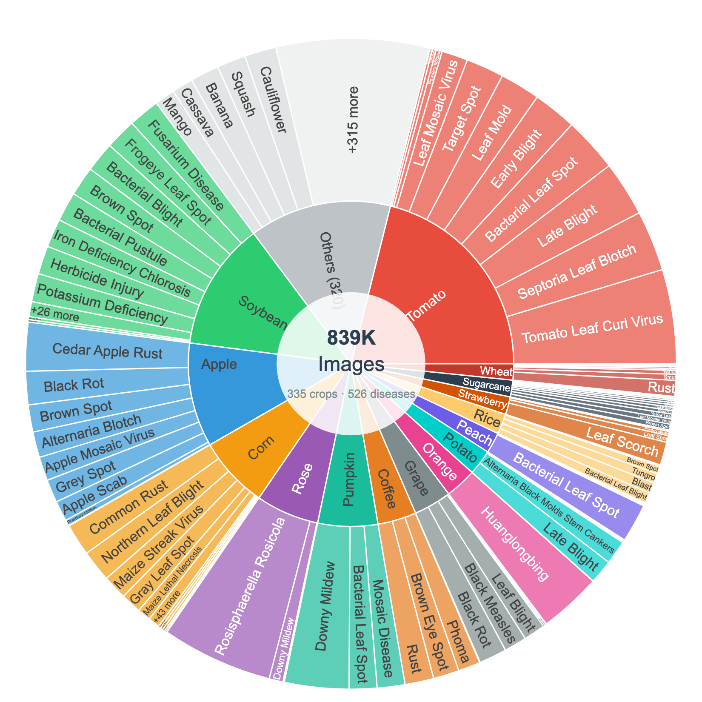
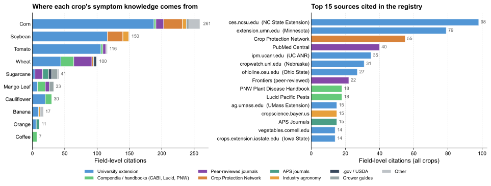
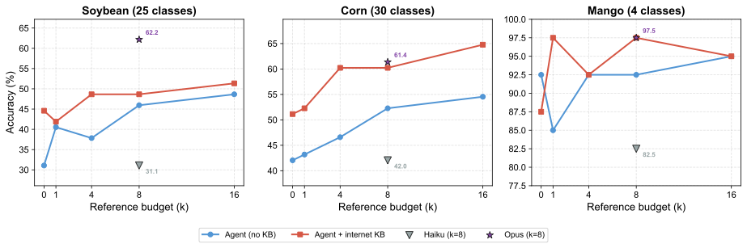
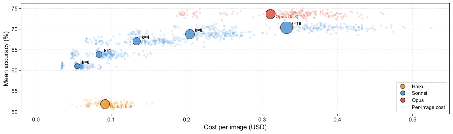
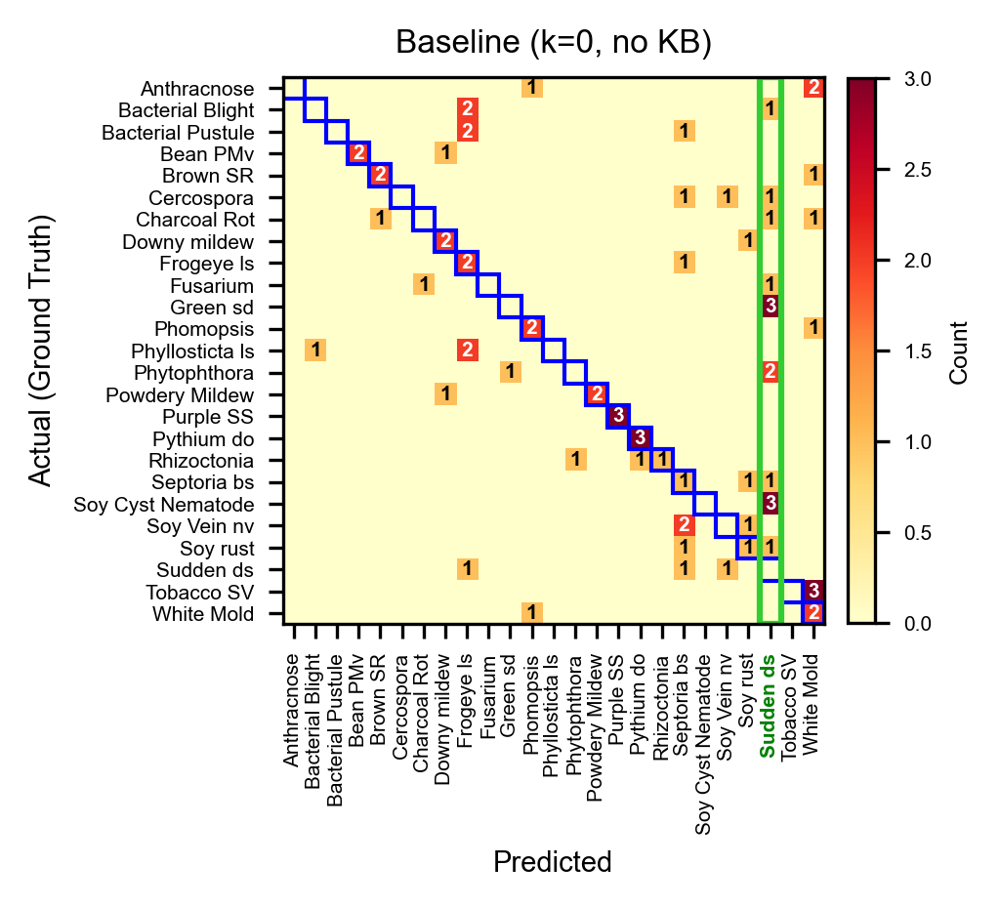
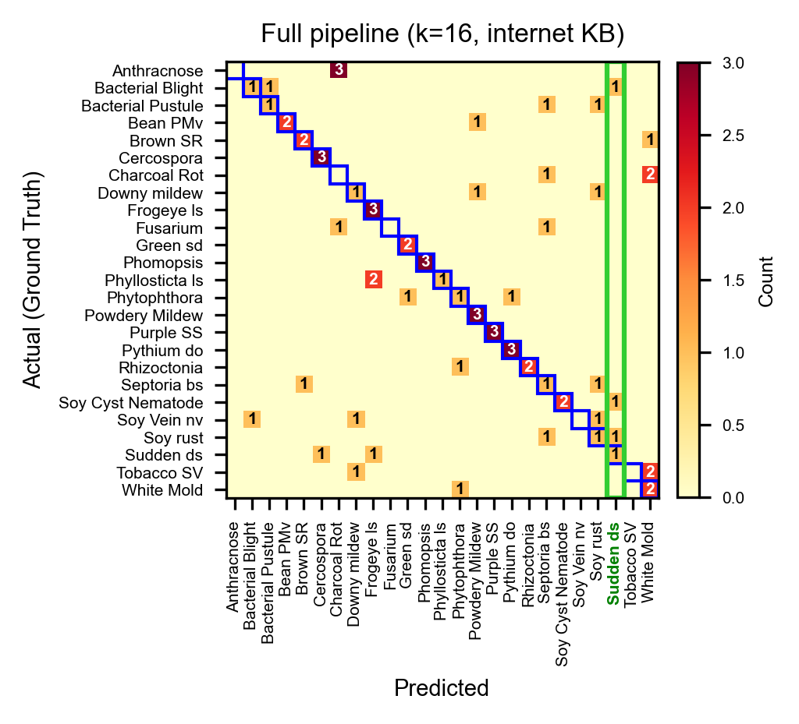

SAGE: Scalable Agentic Grounded Evaluation for Crop Disease Diagnosis
Abstract
Accurate diagnosis of plant diseases is vital for food security worldwide. Since large-scale curated datasets for plant pathologies are scarce, training disease detection models that generalize across crops and field conditions remains hard. We compile the largest plant disease image dataset to date (~839K images, 335 crops, 1,251 disease classes), built for training-free prediction by visual agents. A scalable automated pipeline produces source-grounded symptom descriptions in which every fact ties to a verbatim web quote. Domain experts sanity-check sampled crops and reconcile disease-name variants across sources. As a baseline, we demonstrate an autonomous reasoning agent that identifies the anatomical context, narrows candidates using symptom knowledge, and sequentially compares reference images, producing a full, explainable reasoning trace. Adding symptom knowledge improves accuracy by 15.2 percentage points on average at full reference budget, with consistent gains across all three evaluation crops. We anticipate that the agentic baselines that we establish will benefit directly from future improvements in foundation model capabilities without retraining.
Contributions
- Multi-crop image dataset spanning 335 crops and 1,251 disease classes (~839K images), assembled from established benchmarks, expert-curated collections, and community sources, with multi-organ coverage (leaf, stem, root, seed, ear, head).
- Source-first disease registry pipeline that, given a crop name, automatically produces structured symptom knowledge with per-field provenance: every fact traces back to a specific web source with a verbatim supporting quote.
- Training-free agentic diagnostic pipeline in which each prediction is made by an autonomous reasoning agent that produces an explainable, human-readable reasoning trace showing which references were examined and why.
- Systematic evaluation across three crops of varying difficulty (Soybean, Corn, Mango), multiple reference budgets (k = 0, 1, 4, 8, 16), KB sources, and model tiers (Haiku, Sonnet, Opus).
Dataset distribution

Distribution of ~839K images across 335 crops and 1,251 disease classes. Each disease is paired with structured, source-cited symptom knowledge: organ tags, symptom descriptions, source URLs, and verbatim supporting quotes — not just an image and a label.
Where the symptom knowledge comes from

Sources backing the disease registry across 10 released crops. Left: per-crop field-level citations stacked by source category. Right: top 15 cited domains. The pipeline draws predominantly from US land-grant extension publications, complemented by international compendia (CABI, Lucid Pacific Pests, PNW Plant Disease Handbook), peer-reviewed journals, and the multi-university Crop Protection Network.
Main results: accuracy vs. reference budget

Diagnostic accuracy as a function of reference budget k across three crops of varying difficulty: Soybean (25 classes), Corn (30 classes), and Mango (4 classes). Each panel shows the agent without KB (blue) and with internet KB (red). Adding the KB consistently lifts accuracy, with the largest gains at low k — symptom descriptions and the anatomical index guide the agent to the most relevant references first.
Cost × accuracy across model tiers

Cost-accuracy tradeoff (mean accuracy across all three crops, internet KB). Small dots show individual per-image API costs; large bubbles show aggregate means with bubble size proportional to reference budget k. Increasing k improves accuracy at growing cost with diminishing returns past k=8. Model quality is the single most impactful factor: the system gets better automatically as foundation models improve, with no retraining.
What the KB actually fixes

Baseline (Sonnet, k=0, no KB): 31.1%. Sudden-death-syndrome is heavily over-predicted (14 false positives), absorbing predictions from many other classes.

Full pipeline (Sonnet, k=16, internet KB): 51.4%. The same column drops from 14 to 3 false positives as the agent uses KB symptoms and reference comparisons to distinguish visually similar diseases.
BibTeX
@article{arshad2025sage,
title = {SAGE: Scalable Agentic Grounded Evaluation for Crop Disease Diagnosis},
author = {Arshad, Muhammad Arbab and Roy, Tirtho and Shen, Yanben and Elango, Dinakaran and Chiranjeevi, Shivani and Singh, Asheesh K. and Ganapathysubramanian, Baskar and Hegde, Chinmay and Singh, Arti and Sarkar, Soumik},
year = {2025},
note = {Preprint, under review}
}